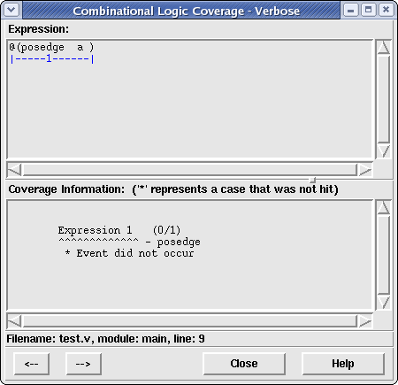
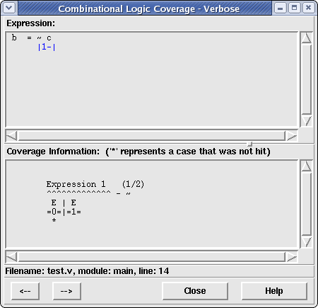
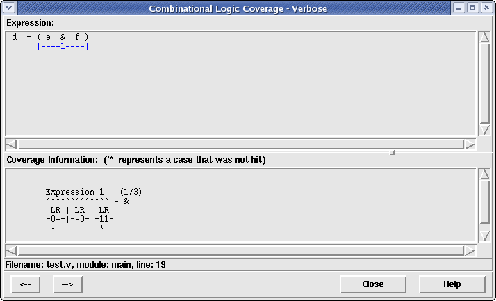
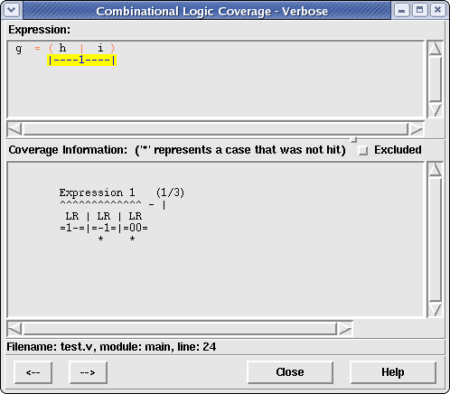
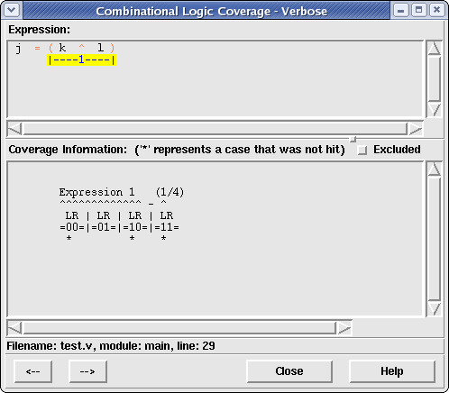
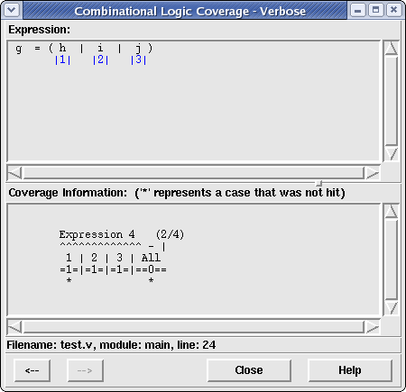

The Verbose Combinational Logic viewer allows the user to look at the subexpressions of a selected statement to determine exactly why a statement did not achieve 100% coverage. The window is split up into two text frames. The top frame displays the selected statement, underlining and numbering subexpressions that were found to not achieve full coverage. The bottom frame displays which combinations of a selected subexpression were hit/missed, allowing the user to discern which combinations of logic are still in need of verification.
To understand what subexpressions of a statement caused it to not achieve 100% coverage, the viewer window allows the user to traverse uncovered subexpressions, displaying the coverage information for each subexpression in the lower frame. To see an uncovered subexpression in the lower frame, simply left click on the underlined subexpression. If the subexpression has one or more children subexpressions, these will be individually underlined and numbered. If the subexpression is a leaf subexpression of the statement, only its coverage information will be displayed in the lower pane. To traverse upward in a subexpression, simply click on the right button. This will cause the parent subexpression to be underlined and its parent (if one exists) will have its coverage information displayed in the lower frame.
The coverage information for a selected subexpression can be one of four different types:
These subexpressions do not have any children expressions. Their coverage is in terms of:
The following operators are considered events:
Figure 1. Example Coverage Output for an Uncovered Event Subexpression
In this diagram, we see that a certain @(posedge clock) expression never occured.
These subexpressions do not have any children expressions. Their coverage is in terms of:
The following operators are considered unary subexpressions:
Figure 2. Example Coverage Output for an Uncovered Unary Subexpression
These subexpressions have two child expressions (L=left and R=right). There are three flavors of simple combinational subexpressions: AND-type, OR-type and other. The differences are explained below.
These subexpressions have three possible combinational outcomes:
The following operators are considered simple AND-like combinational subexpressions:
Figure 3. Example Coverage Output for an Uncovered Simple AND-type Combinational Subexpression
These subexpressions have three possible combinational outcomes:
The following operators are considered simple OR-like combinational subexpressions:
Figure 4. Example Coverage Output for an Uncovered Simple OR-type Combinational Subexpression
These subexpressions have three possible combinational outcomes:
The following operators are considered simple combinational subexpressions:
Figure 5. Example Coverage Output for an Uncovered Simple Combinational Subexpression
These subexpression have three or more child expressions that all are connected by the same operator. For example, the statement a = (b & c & d) would contain the complex combinational subexpression of (b & c & d) where b, c and d are the three child expressions all combined using the bitwise AND operator.
The effect of each subexpression on the value of the entire subexpression as well as the combination of each child toward the parent is displayed. For example, if the combinational operator is a bitwise OR, each child is checked to see if it evaluated to TRUE (in an OR operation, only one subexpression needs to evaluate to TRUE for the entire subexpression to be TRUE). Additionally, all child subexpressions are checked to see if all evaluated to 0 simultaneously (this is the only way to get the whole subexpression to evaluate to 0).
The unique identifier below each subexpression is used in the displayed coverage information for these types of subexpressions for identifying which subexpression did not behave correctly.
All simple combinational subexpressions can be output as complex combinational subexpressions if there are three or more child subexpressions to the operation.
Figure 6. Example Coverage Output for an Uncovered Complex Combinational Subexpression
In this example, subexpression 1 never evaluated to a value of TRUE (which would have made the entire expression TRUE) and all three subexpressions 1, 2, and 3 were never a value of 0 simultaneously (which would have made the entire expression FALSE). However, subexpressions 2 and 3 both evaluated to TRUE at some point.
For any displayed subexpression within a statement, the user may choose to disregard the coverage information for that subexpression by clicking on the 'Excluded' checkbutton on the right side of the window. If this option is checked, Covered will recalculate combinational logic summary coverage information for the current module/instance by adding to the "Hit" count the number of uncovered combinational logic values for the given subexpression (and all subexpressions below this expression within the expression tree). This new summary information will be redisplayed on the Main Window Summary Bar. The subexpression background color in the top frame will also change from the uncovered background color to the covered background color. However, the subexpression will still contain an underline that may be clicked on at any time to view its coverage information or the coverage information for any subexpressions that are uncovered. To include a previously excluded subexpression, simply uncheck the "Excluded" checkbutton. This will automatically cause the summary information and background color to be updated for the given subexpression. Figure 7 below shows an example of a subexpression that has been excluded from coverage consideration.
Figure 7. Example of an excluded subexpression

If an expression tree has been entirely excluded from coverage (all subexpressions have the "Excluded" checkbutton checked), the background color in the Main Coverage File Viewer frame will change from an uncovered background color to the covered background color to indicate at the top-level that this entire statement has been excluded from coverage. However, the statement will still be underlined in the Main Coverage File Viewer to allow the user to view the statement, if necessary.
If the user excludes any subexpression in the design, the "Save CDD..." option in the File Menu will be enabled. This allows the user to save the excluded property either back to the CDD file (or to a newly named CDD file). Doing so will allow the user to load the CDD file at a different time and retain the knowledge of which subexpressions have been excluded/included for coverage. Additionally, if a saved CDD file with coverage exclusion is merged with another CDD file, the excluded subexpression information is preserved for the resulting merged CDD file.
If the Verbose Combinational Logic Coverage window is currently displayed with a statement, the user may select a new statement in the Coverage File Viewer of the Main window. When a new statement is selected, its value immediately replaces the currently selected statement. This feature allows many different statements to be viewed one after the other without having to create/destroy a new window for each.
The user may also see the previous or next uncovered statement in the main viewer by clicking either the "<--" button (for previous signal viewing) or the "-->" button (for next signal viewing). Note that the "<--" button will be disabled if there is not a signal previous to the current signal in the given module and the "--> button will be disabled if there is not a signal after the current signal in the given module.
Clicking the Close button will cause the Combinational Logic Viewer window to close and the current selection identifier to be removed from the Coverage Viewer in the main window.
Clicking the Help button will cause this help page to be displayed in a web brower.